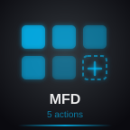

Which style best communicates "press to open more options"?
V1: Big Double Chevron
Bold arrows + label on topV2: Stacked Pages
Overlapping cards with button grid
V3: Grid + More
Button grid with dashed + slotV4: Folder Tab
Classic folder with tab + down arrowV5: Pill Button
Label + arrow in capsule shape